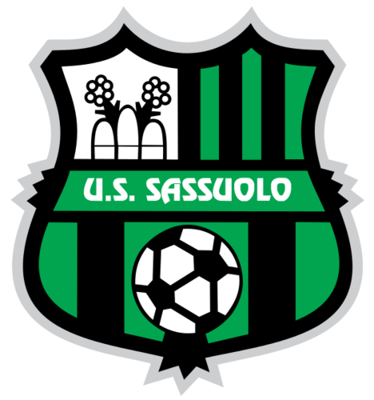
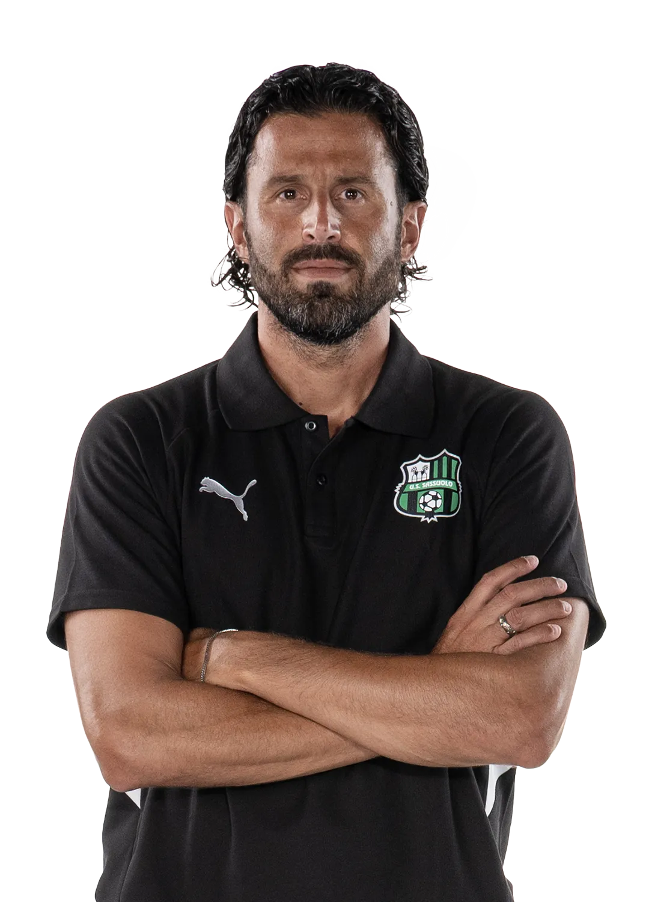
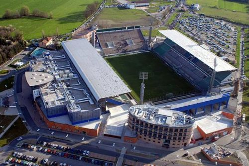

Treinador: Fabio Grosso
A trajetória de Fabio Grosso é definida por uma constante superação competitiva e uma serena inteligência na gestão de grupos de elite, afirmando-se como um treinador de perfil ponderado, pragmático e de uma inabalável resiliência nos momentos de maior exigência.

Estádio: Mapei
O Estádio Mapei ergue-se como um símbolo da vanguarda estrutural no futebol italiano, pautado por um modelo de gestão privada pioneiro e uma funcionalidade arquitetónica de excelência, afirmando-se como um recinto de perfil corporativo, moderno e estrategicamente projetado para o espetáculo desportivo.

Estilo de Jogo:
O estilo de jogo de Fabio Grosso no Sassuolo é definido por uma matriz equilibrada de controlo posicional e uma dinâmica coletiva de transições fluidas, afirmando-se como um modelo de perfil pragmático, flexível e de uma sólida organização estrutural.
"Mai Sola!"